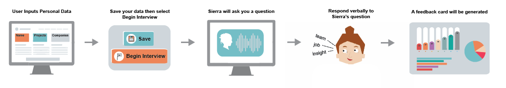

the interview prep tool that will get you jobs.
Interviewing is a necessary step to almost every job application. Practicing for interviews greatly improves your performance, but it is often hard to know what to expect from an interview if you’ve never experienced one. Receiving feedback from practice interviews comes at various levels of quantity and quality. Our product, (pant)suit up, is focused on streamlining the interviewing process, from question prompting to straight-forward, personalized feedback. Using our innovative web platform users are able to enter details from their resume and engage in a real-time interview with Sierra, our intelligent interviewer. Sierra uses AI and machine learning to create a personalized interview based on the user's input, and prompts the user with commonly asked interview questions. At the end of the interview, Sierra will provide data and suggestions in several areas of possible improvement, including speed, confidence, personality, ownership, passiveness, length of answers, and repetition. We created this product because we often find ourselves struggling to align our interview styles with the male-dominated work force. Traditionally women exhibit certain behaviours during interviews that can clash with current company culture, such as using we instead of I and speaking in a passive manner. We hope that (pant)suit up will allow everyone to practice their interview skills and obtain useful feedback.
UMA DESAI majoring in engineering with computing from Olin College of Engineering, Uma enjoys eating, minions, and shooting hoops. to be clear, the eating and the minions do not overlap.
GWYNETH PHELPS unlike her teammates, Gwyn is majoring in mechanical engineering at Olin College. she doesn't know much about coding but she does know that she loves catching up on sleep whenever possible.
MARY KEENAN when Mary isn’t busy coding (and sometimes when she is) she enjoys eating excessive amounts of peanut butter and tamales. she is majoring in engineering with computing, with a minor in being gluten-free.
RACHEL YANG Rachel is majoring in engineering with computing from Olin College. she lives for watching trash tv and constantly snapping pics for her food blog. #basic #echo #blessed #wild